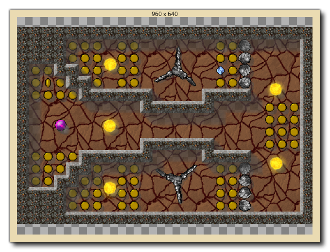

The Debugger is a powerful tool for checking your game, and is especially useful for tracking down errors and bugs in your code, as well as checking that scripts are run when they should be, and that variables and arrays contain the values you expect etc... You can start the Debugger by running your game from GameMaker Studio 2 IDE using the Debug button at the top of the IDE, or by going to the Build menu and selecting "Debug".
When you run a game in debug mode, the IDE will display the
different tools available for the Debugger: 
The image shown above shows the default layout for the debugger,
but as with other aspects of the IDE you can customise this to suit
your needs, closing windows you don't need or changing the sizes of
the docs and windows that you do need. You can reset the debugger
layout at any time - or reopen closed windows - from the
Debugger context menu at the top of the IDE: 
Below we explain what each section of the debugger is for:
The Graph view shows you a graphic display of how your project is using memory and its framerate over time. :
The graph shows the current and average memory use as well as the current and average FPS over time, and you can zoom in or out using the
/
along with the mouse wheel
, and if you position the mouse cursor over any of the graph elements, it will show you the value for that element at the selected point.
The Graph view will also show certain debug events as points along the length of the graph. These events are generated automatically by GameMaker Studio 2 at certain points in the running of a game to show specific important events, but you can also add in your own graph elements using the functions show_debug_message() and debug_event(). System events will be flagged in a different colour to those events that are triggered through code:
When running the game in debug and mousing over these events, a list will be shown of all the events that were triggered at that point in the game, and you have the option of pulling the list out into a separate window for revising by clicking the "Click to open in a new window" text:
The Resource View shows you a list of all the resources being used in the project that can contain code or DnD™ actions. This section works much like the Resource Tree and you can expand the items in it to show more information, for example, the different events for a specific object. You can then double click
on any of the resources to open the code for it in the Code View window, where you can check values and add or remove breakpoints.
This window will display the current call stack of events, as well as the line number for the code being stepped through. The debugger will need to have been Paused before any information will be shown here.
The toolbar has the debugger controls along with some basic information such as memory use, the current (real) FPS for the game and an indicator to show whether the debugger is currently connected or not (the indicator will be green when connected to a running instance of your project and red otherwise). The available controls are:

This starts the game again after it has been paused (keyboard shortcut f5). 
This will pause (break) the game. 
Restarts the game. 
Stops the game. 
Step into a code block or script (keyboard shortcut f11). 
Step over a code block or script (keyboard shortcut f10). 
Step out of a code block or script (keyboard shortcut + f11).

Turn on or off real time updates for the debug information (this is off by default). The first three buttons are used to control your game, permitting you to start, pause, restart or stop it at any time. When the game is paused 8either by clicking the Pause button or from a Breakpoint) you can then use the three "step" buttons for stepping through your code. This simply means that you can tell your game to run the current line of code, then step onto the next one, permitting you to run through your entire game one line of code at a time should you wish. Normally you would simply use the Step In button to do this, but you also have one for stepping over code and one for stepping out of the code. Stepping over is useful when you have large scripts to run through, as clicking this will run the whole script or code block as a single step and stop on the next line afterwards, while stepping out will take you out of a script (they will run, but all at once) and stop on the next step afterwards when the scope changes. The final icon permits the debug window to update its data in real time, so you can see how variables change or instances are created and destroyed as it happens. Note that this may affect the games performance and that not all information is available in real time. For example, the Render State watch (see the section on Watches, below) cannot be viewed in real time.
The code view is where we can see and review different scripts or event code from our project as it runs. By default this starts empty, but you can double click
You can also use the right mouse button
to open the Context Menu, which also permits you to add or remove breakpoints and copy any selected code to the clipboard.
More information on BreakPoints can be found further down this page.
The whole idea of the Debugger is to permit you to "watch" every detail of your game. This is done using "watch windows" which, by default, are opened in the Output window docked at the bottom of the IDE. You can click on each of the different tabs to see the watches that they contain, some of which will update in real time (like the Global watches) while others (like the Local watches) will require the debugger to have paused the game. We've listed each of the watch windows here separately along with an explanation of what they do:

The Locals window shows the current step properties, which includes the name of the current event (or script) being run, the offset in the virtual machine code for the current script (the acronym "PC" is for "program counter"), the "self" instance running the code block, and the "other" instance in the event. This last part is only ever valid when the event is a collision event or there is a with used in the code. If the instance is in collision, "other" will show the other instance (and its variables) in the collision, but if it is a with then the "Self" instance becomes that which is running the code, while "Other" is then the instance that actually contains the with. At all other times, "other" will simply show the same data as "Self". After all this information, you will then find a list of all local variables that are currently declared for the code block being stepped through. If you right click

The Globals window will show a list of all the currently declared global variables and their values. If you right click

This window is for you to add a specific variable that you want to keep track of. This can be a global or instance scope variable, a built in variable or even an array or data structure. If the the instance code being stepped through has the watched variable it will be shown here, meaning you can easily keep track of a value without having to search for it in the Locals or Globals windows. If you right click

As the name implies, this window will show all instance variables, local variables and built in variables associated with the instance currently being stepped through in the Source window (if an instance is being referenced using the keyword "other" or the with statement, then this window will show that instances properties instead).

Should you need to see all instances that are currently in the room, you can select this window and they will be listed. You can also see the state of any built in or instance variables that they have, and you can right click

This window is for when you select an instance from your game. This is done by simply pausing the game and then clicking on any visible instance within the game window. The instance found beneath the mouse cursor will then have its information displayed in the Selected Instance window, where you can see it's built in and instance variables, the same as for the Instances window.

This watch shows you all the information available for the state of the current frame being rendered, like the draw alpha or fill colour. This cannot be updated in real time so you will need to pause the game to get and update the frame details.

This watch enables you to see exactly what is being drawn to any surfaces you have in your game (including the application surface) as well as see the texture pages that are in memory. You can select from textures or surfaces from the bottom of the watch, and then mouse over the texture or surface ID to have it displayed in a pop-up window. 
Note that the debugger must be paused before these will update.
This window is where you can see the current system profile for the game being tested where you can check everything in your game from whole events to individual function calls to see how they are performing and spot any trouble areas or bottlenecks. For further information on profiling see the section further down on this page.
If you have initialised any buffers in your game, then this window will show you the buffer data. You can select any buffer created by setting the Buffer ID value, which will start at 0 for the first buffer created in your game, and increment by 1 for each consecutive buffer.
If you right click


It is important to note that while the game is running it
doesn't update the debug windows with variable values and other
details by default, therefore you must first either use the
Pause button in the Debugger to pause the game before
Locals, Globals and other data will be available, or enable
real-time updating from the icons at the top . The only
exception to this rule is the Profile view, which updates in
real time when enabled independently of the real-time switch, as it
has its own on/off button.
Data Types
When you are watching a variable in any of the windows, it can be
one of multiple data-types. However, due to the way that
GameMaker Studio 2 stores certain things, the Debugger does
not always know exactly what the variable holds. This is because
the internal ID values for data structures or instances are
integers and so the Debugger doesn't always know if the integer
value being stored in a variable is for a data structure or an
instance or is simply an integer value. For that reason, you can
right click  on any variable value and get a pop-up
window that lists the available data-types that this variable could
be.
on any variable value and get a pop-up
window that lists the available data-types that this variable could
be. 
Strings and arrays do not permit this option, and it is worth noting that even if a data structure is stored in an instance variable, its ID number is global, so if you have four instances and each one creates a ds_list (for example), each list will have an ID from 0 to 3, and they won't all be 0.
Once you have selected your data-type, the variable will then
show the entries in the structure simply by clicking the small
 next to its name. This will expand the structures contents, and, in
the case of the "Watches" window, permit you to modify them
too.
next to its name. This will expand the structures contents, and, in
the case of the "Watches" window, permit you to modify them
too.
Breakpoints
A breakpoint is a place in your project code that you wish
it to stop at so you can see what's going on. With the Debugger
running, you can add or remove breakpoints at any time and in any
code or script block by left clicking  in the
gutter (where the line numbers are), or you can use the right mouse
button
in the
gutter (where the line numbers are), or you can use the right mouse
button  to open the Context Menu, which
also permits you to add or remove breakpoints:
to open the Context Menu, which
also permits you to add or remove breakpoints:

Breakpoints can also be set from the GameMaker Studio 2
IDE. When writing your project, they can be added or removed at any
time using f9 (or using the right mouse button  and
selecting "toggle breakpoint"), either on an action in the object
window, or on a line in a code editor window. Now, when you run
your game in debug mode it will pause at the point (or points) that
you have defined. Breakpoints set from the IDE are saved along with
your project and will persist over various runs until removed
again, however if you add a breakpoint to your code in the
Debugger, this will be lost after the module is closed, or a new
test run started. Note that all breakpoints will appear in the
Output Window where they can be enabled
or disabled or even removed.
and
selecting "toggle breakpoint"), either on an action in the object
window, or on a line in a code editor window. Now, when you run
your game in debug mode it will pause at the point (or points) that
you have defined. Breakpoints set from the IDE are saved along with
your project and will persist over various runs until removed
again, however if you add a breakpoint to your code in the
Debugger, this will be lost after the module is closed, or a new
test run started. Note that all breakpoints will appear in the
Output Window where they can be enabled
or disabled or even removed.
Profiling
The Debugger permits you to step through your code and find any
issues with the code base, but sometimes you need to check for
subtler details in order to properly optimise your games. The
Profile option helps to do just that by giving you a
performance overview, showing the time takes to call functions,
scripts, and even how long it took a specific event to complete.

Apart from the main window showing all the different events, scripts and functions being called, you also have the following options for using the Profiler:
This is the button to enable or disable the Profiler. When enabled, the profiler will start and you will start to see events, scripts and functions be listed in the main window along with different data values for each of them. How this data is displayed will depend on the Time Display and the View Mode (both explained further down this page).
This checkbox permits you to switch between the average time and the absolute time for the profiler. When it is not checked, the values shown in the main window will be the total number of calls made to the function, script or event and the total time taken (times are in microseconds) over the course of the profile. However if you enable this then these columns show the average time taken per step for each function, script or event, and the average number of times that it was called.
This menu lets you choose the view mode, which can be either Top Down or Bottom Up.
Selecting the Top Down view mode will show the profile from the top down (more or less the same as the callstack hierarchy) so it will show the event, then the script and then any functions used. Note that you can double click
Selecting the Bottom Up view mode will show things from the bottom up so you can see all the functions and script calls individually. When using this view mode, clicking on the
The View Target permits you to choose between viewing the project GML (event and code data), the background engine processes or both. If you choose "GML", then you will get the events, functions and scripts being called each step while the "Engine" view will only show the engine calls required by the project, enabling you to see any bottlenecks in the way that your project is handling things. If you select "Both", then both sets of data will be displayed, but note that when combined with the "Bottom Up" view, the different script and function calls will be nested within the engine calls and you will need to click the
The profile data is shown in four columns, and clicking on any of
them will sort the data according to the column criteria.

- Name - This is the name of the event, script or function
being called, and may have a beside it to denote further calls to
it or from it (depending on the View Mode you have selected). You
can double click on any of the names to have it open
the code block or script within the Source window. Clicking
the top of this column will sort the names in alphabetical
order.
- Time - This will show either the total time that a
function (or script or event) has taken while profiling, or the
average time that it has taken each step to be called (depending on
the Time Display option selected) and it is displayed in
microseconds.
- Calls - Here you can see either the total number of
calls to the given event, function or script, or the average number
of calls to it in a single step (again, depending on the Time
Display option selected).
- Step% - The value shown here is the overall percentage of a single step that the call has taken.